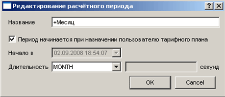
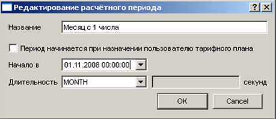

|
Примеры |
Top Previous Next |
|
На изображениях приведены варианты настроек для двух простых расчетных периодов:
 Каждый новый период будет начинаться в то же время, когда период был активирован + N*количество месяцев.
 Каждый новый период будет начинаться 1 числа каждого месяца в 00:00:00. This help file was created with an unregistered evaluation copy of Help & Manual. © EC Software. All rights reserved. This message will not appear if you compile this help file with the registered version of Help & Manual. |